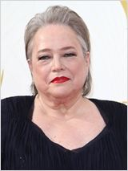
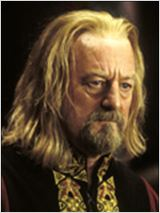

SINOPSIS:
Durante las labores de recuperación de los restos del famoso trasatlántico Titanic, una anciana norteamericana se pone en contacto con la expedición para acudir a una plataforma flotante instalada en el Mar del Norte y asistir in situ a la recuperación de sus recuerdos. A través de su memoria reviviremos los acontecimientos que marcaron el siniestro más famoso del siglo XX: el hundimiento del trasatlántico más lujoso del mundo, la máquina más sofisticada de su tiempo, considerada «insumergible», que sucumbió a las heladas aguas del Atlántico en abril de 1912, llevándose consigo la vida de 1.500 personas, más de la mitad del pasaje. En los recueros de la anciana hay cabida para algo más que la tragedia, la historia de amor que vivió con un joven pasajero de tercera clase, un pintor aficionado que había ganado su pasaje al ganar a las cartas en una taberna de Southampton.Jack (Leonardo DiCaprio, 'El gran Gatsby'), un humilde y joven artista, y Rose (Kate Winslet, 'Un Dios salvaje'), una chica de clase acomodada, se conocerán a bordo del Titanic, el barco más espectacular que jamás haya surcado los siete mares. Jack ha ganado el billete en una timba, y sus aposentos en el barco no son precisamete confortables. Por su parte, Rose, no está contenta con su suerte, pues está comprometida con un hombre al que no ama, Caledon (Billy Zane), que la trata como si fuera otra más de sus posesiones, olvidándose de que en realidad es un ser humano. La joven verá en Jack un galán romántico hecho a su medida, pero su amor es imposible debido a las barreras sociales que les separan. Cuando los dos están decididos a luchar por sus sentimientos, el barco choca contra un iceberg, se desata la locura y comienza una lucha generalizada por la supervivencia.
James Cameron reconstruye con precisión el hundimiento del famoso trasantlántico, consiguiendo una de las epopeyas románticas más importantes del cine de todos los tiempos.
PREMIOS:
- 1997: 11 Oscars, incluyendo mejor película, director, fotografía, sonido. 14 nom.
- 1997: 4 Globos de Oro: Mejor película drama, director, BSO, canción. 8 nom.
- 1997: 10 nominaciones a los BAFTA, incluyendo mejor película y director
- 1997: Premios Cesar: Nominada a mejor película extranjera
- 1997: National Board of Review: Mejor director
- 1998: Premios del Cine Europeo: Premio del Púbico mejor actriz (Kate Winslet)
- 1997: Critics' Choice Awards: Mejor director (James Cameron). Top 10 - Mejores pel. del año
- 1997: Sindicato de Productores (PGA): Mejor película
- 1997: Sindicato de Directores (DGA): Mejor director
- 1997: Sindicato de Actores (SAG): Mejor actriz secundaria (Gloria Stuart). 3 nominaciones
- 1997: Asociación de Críticos de Chicago: Mejor banda sonora y fotografía
REPARTO:
- James Cameron
Director
- Leonardo DiCaprio
Personaje: Jack Dawson
- Kate Winslet
Personaje: Rose DeWitt Bukater
- Billy Zane
Personaje: Cal Hockley
- Kathy Bates
Personaje: Molly Brown
- Bill Paxton
Personaje: Brock Lovett
- Gloria Stuart
Personaje: Old Rose
 Frances Fisher
Frances FisherPersonaje: Ruth DeWitt Bukater
- Bernard Hill
Personaje: Captain Edward J. Smith